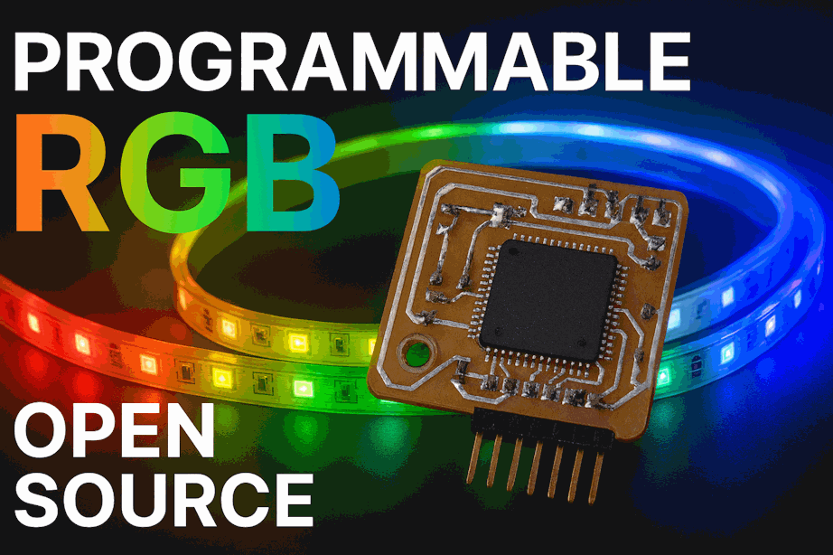

RANGMANG is an RGB controller based on the ATmega128 microcontroller, programmed using BASCOM.
The following table introduces various LED strips and their specifications:
| LED Strip Model | Operating Voltage | Control Type | Addressable | Special Features |
|---|---|---|---|---|
| WS2811 | 12V | Digital | Yes | Suitable for long strips |
| WS2812B | 5V | Digital | Yes | Built-in chip in each LED |
| WS2813 | 5V | Digital | Yes | Resistant to data line failure |
| WS2815 | 12V | Digital | Yes | Industrial-grade, low voltage drop |
| SK6812 | 5V | Digital | Yes | Supports RGBW (white channel) |
| SK9822 | 5V | Digital | Yes | High-speed, similar to APA102 |
| APA102 | 5V | Digital (Clock + Data) | Yes | Fast animations, dual-wire control |
| TM1814 | 12V | Digital | Yes | RGBW, high-power applications |

This configuration defines how the RANGMANG module controls LED dance modes. Each row encodes the following parameters (ADRGBSEM format):
| A (Channel) | D (Mode) | R (Red) | G (Green) | B (Blue) | S (Dance Time 1) | E (Dance Time 2) | M (Pixel Count) |
|---|---|---|---|---|---|---|---|
| A01 | D12 | R251 | G251 | B251 | S001 | E001 | M128 |
📦 Download soifgo_rangmang_design
| A (Channel) | D (Mode) | R (Red) | G (Green) | B (Blue) | S (Start Pixel) | E (End Pixel) | M (Memory Slot) |
|---|---|---|---|---|---|---|---|
| A01 | D00 | R200 | G050 | B100 | S001 | E120 | M010 |
' 30 inputs ' ADRGBSEM ' A00D00R000G000B000S000E000M000 ' A01 TO A98 FOR ADDRESS MODULE A99 FOR ALL ' IF D00 THEN SOLID COLOR ' R000 TO R255 RED COLOR ' G000 TO G255 GREEN COLOR ' B000 TO B255 BLUE COLOR ' S000 TO S480 RGB STRIP START POSITION FOR COLORED PIXEL ' E000 TO E480 RGB STRIP END POSITION FOR COLORED PIXEL ' M000 TO M098 M000 WITHOUT MEMORY SAVE M001 SAVE SLOT 1 MEMORY ' IF D01 TO D38 DANCE ' D39 FOR RANDOM SELECT D01 TO D38 DANCE ' R000 TO R250 RED COLOR R251 TO R255 FOR RANDOM RED COLOR ' G000 TO G250 GREEN COLOR G251 TO G255 FOR RANDOM GREEN COLOR ' B000 TO B250 BLUE COLOR B251 TO B255 FOR RANDOM BLUE COLOR ' S000 TO S999 RGB STRIP FIRST DELAY EFFECT (ms) ' E000 TO E999 RGB STRIP SECOND DELAY EFFECT (ms) ' M001 TO M480 SET HOW MANY PIXELS DANCING
' 30 inputs ' ADRGBSEM ' A00D00R000G000B000S000E000M000 ' A01 TO A98 FOR ADDRESS MODULE A99 FOR ALL ' IF D00 THEN SOLID COLOR ' R000 TO R255 RED COLOR ' G000 TO G255 GREEN COLOR ' B000 TO B255 BLUE COLOR ' S000 TO S480 RGB STRIP START POSITION FOR COLORED PIXEL ' E000 TO E480 RGB STRIP END POSITION FOR COLORED PIXEL ' M000 TO M098 M000 WITHOUT MEMORY SAVE M001 SAVE SLOT 1 MEMORY ' IF D01 TO D38 DANCE ' D39 FOR RANDOM SELECT D01 TO D38 DANCE ' R000 TO R250 RED COLOR R251 TO R255 FOR RANDOM RED COLOR ' G000 TO G250 GREEN COLOR G251 TO G255 FOR RANDOM GREEN COLOR ' B000 TO B250 BLUE COLOR B251 TO B255 FOR RANDOM BLUE COLOR ' S000 TO S999 RGB STRIP FIRST DELAY EFFECT (ms) ' E000 TO E999 RGB STRIP SECOND DELAY EFFECT (ms) ' M001 TO M999 SET HOW MANY PIXELS DANCING